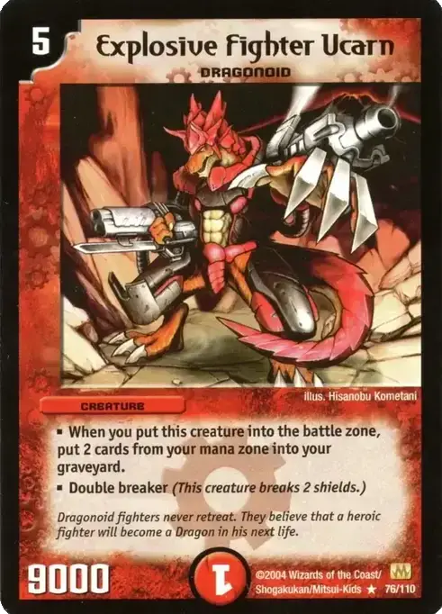
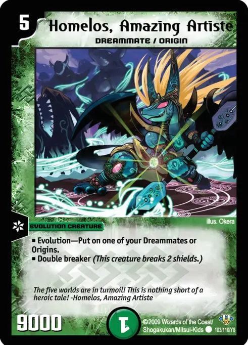
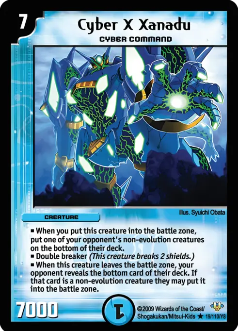
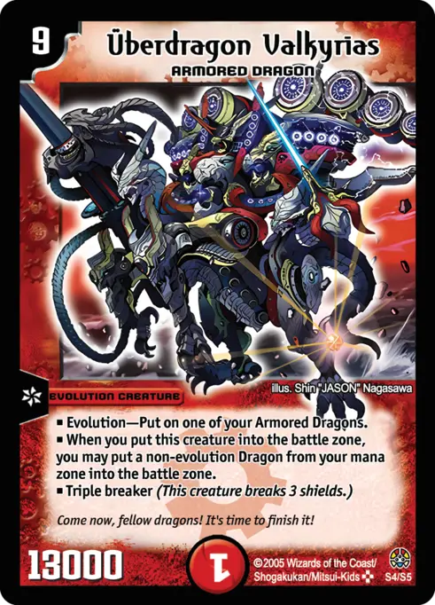
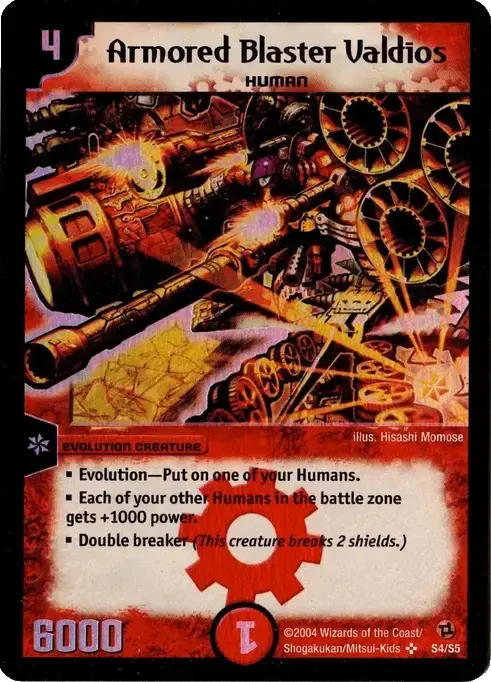

Fire Valdios Assault
43 cards · updated 2026-10-19
Fire-led evolution beatdown with Armored Blaster Valdios as the early boss. Turns 2-3: Human bases (Brawler Zyler, Gonta, Explosive Dude Joe, Brad) and Faerie Life ramp. Turn 3-4: evolve into Divine Machine Armor Valborg (3-cost Double Breaker) or Valdios (Double Breaker, other Humans +1000). Blockers get cleared by Brad (silent skill), Wind Axe (also ramps) and The Strong Crush (draws a card with a 6000+ creature out); Valkaizer and Searing Wave clear small attackers. Nature only ramps and supplies Barkwhip and Fighter Dual Fang, which go on Gonta or Wind Axe (both Human and Beast Folk). Ucarn and Fighter Dual Fang are the heavy hitters; Peacock Breath turns the whole board into Double Breakers for the final swing.
Fire Nature Evolution Beatdown
46 cards · updated 2026-10-19
Evolution beatdown. Turns 2-3: cheap Human and Beast Folk bases (Gonta counts as both) plus Nature ramp (Faerie Life, Bronze-Arm Tribe). Evolve the bases into power monsters that attack immediately: Barkwhip (2 cost, 5000), Armored Blaster Valdios (Double Breaker, Humans +1000), Armored Decimator Valkaizer (destroys a creature with 4000 power or less), Fighter Dual Fang (8000 Double Breaker, ramps 2). Ramp pays for Explosive Fighter Ucarn's 9000 Double Breaker and its 2-mana drawback. Searing Wave wipes the opponent's small creatures and blockers before a big attack; Tornado Flame is removal and a Shield Trigger; Magma Gazer turns any attacker into a Double Breaker for the finishing push. Extras (46-card version): Peacock Breath gives every creature power attacker +6000 while you have an evolution out, turning even 2-cost bases into Double Breakers for a finishing swing; Power Blazer is an extra Beast Folk base that becomes 5000 power with an evolution out; Crimson Hammer clears small blockers early.

Fire Nature Dreammate Swarm
40 cards · updated 2026-10-19
Go-wide aggro. Flood the board with cheap Dreammates and Vehicle Bees (Kabuto 1, Ralbin, Pakoneko, Rinpao) on turns 2-3. Jangaljan makes every Nature creature cost 1 less and Peach Princess makes your second creature each turn cost up to 2 less, so turns 3-5 often drop 2-3 creatures. Hopstep Battan is a 4-cost 7000 Double Breaker that survives as long as you keep playing a Dreammate or Vehicle Bee each turn. Homelos evolves onto any Dreammate and attacks immediately as a 9000 Double Breaker. Finish with Daigoku Ogre (all Dreammates and Vehicle Bees get Double Breaker) or a Lunatic Energy (+4000 to all your creatures) alpha strike. Comet Missile clears blockers.

Water-Darkness Control
40 cards · updated 2026-10-19
Classic draw-go control. Turns 2-4: wall up with blockers (Cosmo Politan draws when it blocks, Bloody Squito is a 4000-power wall for 2, Gigaslug's Slayer kills whatever it blocks, Hulk Crawler and Phantom Spear Zircon draw on entry). Use Energy Stream and Brain Serum to keep land drops and answers flowing. Mid-game: kill or bounce every real threat with Spiral Gate, Death Chaser, Hopeless Vortex and Terror Pit; Death Mendosa and Aqua Surfer are removal stapled to bodies. 15 Shield Triggers punish rush. Late game: land 7-cost double breakers that also remove creatures as they enter (Cyber X Xanadu tucks a creature to the bottom of the deck, Ghoul Ginus trades a shield for a kill, Olzekia sacrifices a used-up blocker so the opponent destroys 2 creatures), then close out once their board is empty. Mulligan/keep tips: you want a 2-cost blocker or Spiral Gate plus both civilizations in early mana. Put spare Cosmo Politans or excess 7-drops into mana early.

Armored Dragon Overlords
40 cards · updated 2026-10-19
Fire/Nature Armored Dragon ramp. Turns 2-3: Faerie Life, Bronze-Arm Tribe and Cocco Lupia (Dragons cost 2 less, minimum 2). From turn 4 drop 6-cost Armored Dragons, then evolve them into Überdragons. Bolshack NEX pulls a Cocco Lupia from the deck straight into the battle zone. Velyrika Dragon tutors more Armored Dragons. Valkerios Dragon is free once 2+ Armored Dragons are in play. Überdragon Bash Mikazuchi costs 3 with Cocco and makes the opponent destroy one of their own creatures whenever they attack. Überdragon Valkyrias cheats a Dragon from mana into play. Überdragon Bajula triple-breaks and destroys mana. Totto Pipicchi gives every Dragon speed attacker. Removal: Volcanic Arrows, Natural Snare, Bolmeteus Musha Dragon and Dolzark (whenever another Dragon attacks, sends a creature with 5000 or less power to mana). Mulligan for ramp or Cocco Lupia. Putting a 6-drop Dragon in mana early is fine because Valkyrias can bring it back.

Fire Nature Speed Rush (DM-01 to DM-12)
40 cards · updated 2026-10-19
Hyper-aggressive Fire/Nature rush. Turn 2: drop a 2-cost Human or Beast Folk (Gonta 4000 is the best, being both races). Turn 3+: evolve and attack immediately (Barkwhip 5000 on Beast Folk for 2; Armored Blaster Valdios 6000 double breaker on Humans for 4, which also pumps other Humans), or add haste with Pyrofighter Magnus (3-cost speed attacker that returns to hand each turn so it can be replayed), Hypersprint Warrior Uzesol (attacks at 5000) and Mezger (Human speed attacker that can be evolved into Valdios). Mykee's Pliers gives every Nature creature speed attacker, so all the Nature 2-drops and Barkwhip can attack the turn they land. Comet Missile and Crimson Hammer clear blockers and small defenders; Comet Missile and Tornado Flame double as shield triggers. Mulligan/keep: hands with 2+ two-drops. Prioritize Fire in mana (29 Fire vs 15 Nature), and put Gonta in mana only as a last resort since it enters tapped.